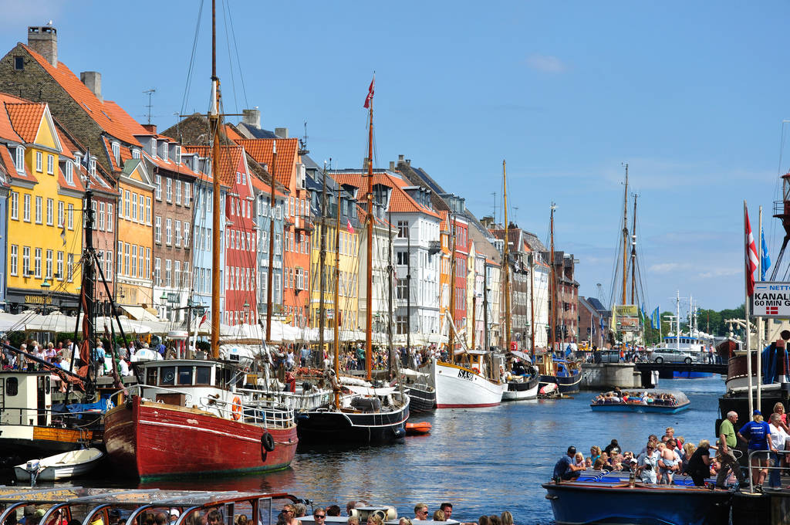

|
Wikipedia:
"Copenhagen is the capital and most populous city of Denmark. As of 1
January 2020, the city had a population of 794,128 with 632,340 in
Copenhagen Municipality, 104,305 in Frederiksberg Municipality, 42,989
in Tårnby Municipality, and 14,494 in Dragør Municipality. It forms the
core of the wider urban area of Copenhagen (population 1,330,993) and
the Copenhagen metropolitan area (population 2,057,142). Copenhagen is
situated on the eastern coast of the island of Zealand; another portion
of the city is located on Amager, and it is separated from Malmö,
Sweden, by the strait of Øresund. The Øresund Bridge connects the two
cities by rail and road."
|

|